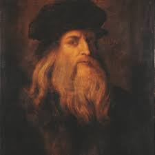

Leonardo da Vinci (English: /ˌliːəˈnɑːrdoʊ də ˈvɪntʃi, ˌliːoʊˈ-, ˌleɪoʊˈ-/;[a] 14/15 April 1452[b] – 2 May 1519)[4]
was an Italian polymath of the High Renaissance who is widely considered one of the most diversely
talented individuals ever to have lived.[5] While his fame initially rested on his achievements as a painter,
he also became known for his notebooks, in which he made drawings and notes on science and invention; these involve a
variety of subjects including anatomy, astronomy, botany, cartography, painting, and palaeontology.
Leonardo's genius epitomized the Renaissance humanist idea,[6] and his collective works compose a contribution to
later generations of artists rivalled only by that of his contemporary Michelangelo.

Born in Figueres, Catalonia, Dalí received his formal education in fine arts at Madrid. Influenced by Impressionism and the Renaissance
masters from a young age, he became increasingly attracted to Cubism and avant-garde movements.[3] He moved closer to Surrealism
in the late 1920s and joined the Surrealist group in 1929, soon becoming one of its leading exponents. His best-known work,
The Persistence of Memory, was completed in August 1931, and is one of the most famous Surrealist paintings.
Dalí lived in France throughout the Spanish Civil War (1936 to 1939) before leaving for the United States in 1940
where he achieved commercial success. He returned to Spain in 1948 where he announced his return to the Catholic
faith and developed his "nuclear mysticism" style, based on his interest in classicism, mysticism and recent scientific developments.[4]
Pablo Ruiz Picasso[a][b] (25 October 1881 – 8 April 1973) was a Spanish painter, sculptor, printmaker,
ceramicist and theatre designer who spent most of his adult life in France. Regarded as one of the most
influential artists of the 20th century, he is known for co-founding the Cubist movement,
the invention of constructed sculpture,[6][7] the co-invention of collage,
and for the wide variety of styles that he helped develop and explore.
Among his most famous works are the proto-Cubist Les Demoiselles d'Avignon (1907), and Guernica (1937),
a dramatic portrayal of the bombing of Guernica by German and Italian air forces during the Spanish Civil War.
Michelangelo di Lodovico Buonarroti Simoni (Italian: [mikeˈlandʒelo di lodoˈviːko ˌbwɔnarˈrɔːti siˈmoːni];
6 March 1475 – 18 February 1564), known best as simply Michelangelo (English: /ˌmaɪkəlˈændʒəloʊ, ˌmɪk-/[1]),
was an Italian sculptor, painter, architect and poet of the High Renaissance born in the Republic of Florence,
who exerted an unparalleled influence on the development of Western art. His artistic versatility was of such a
high order that he is often considered a contender for the title of the archetypal Renaissance man, along with
his rival, the fellow Florentine, Leonardo da Vinci.[2] Several scholars have described Michelangelo as the
greatest artist of his age and even as the greatest artist of all time.